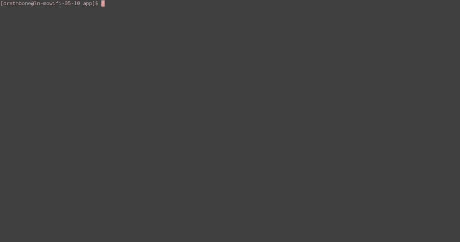

Building a web service with Spring Boot.
What is Spring Boot?
Spring Boot is a part of the Spring web framework that focuses on using "Convention over Configuration"
to allow developers to rapidly set-up web applications. "Convention over Configuration" is the idea that
in order to save time, developers should only have to specify the technologies they want to use if they are
exceptions to the rule.In this sense, Spring Boot decides on a set of default technologies
and if you want to use an alternative,you just specify it in a configuration file.
Prerequistes.
A basic knowledge of the Java language.
A basic knowledge of the command line.
JDK.
Surprisingly enough, you will need the
Java Development Kit!
Maven.
Download and install Apache Maven.
Maven is a Java build automation tool. It uses a "Project Object Model" represented as XML in a file called pom.xml containing
the metadata and dependencies for your project. A dependency is any external library that your project may need and
using this tool it means you do not have to manually include all these in your project as it downloads them at build time.
To find available dependencies, you can use the the Maven central repository or
add your own alternative repository.
A text editor or IDE.
I personally used Atom as a text editor for this tutorial
but you can use what ever you like, Spring Tool Suite
has integrated support for Spring projects so this may be a good starting point if you haven't
developed one before.
Step 1
Laying it out.
To build correctly, your project should follow the standard directory layout specified by Maven.
For our project, we should include the dependency for the spring boot starter kit in the pom.xml file
as well as the spring boot maven plugin which allows you to run spring boot specific targets through
the maven CLI.
Maven directory layout
-pom.xml -Project Object Model file
-src
-main
-java -Java source code e.g "main.java".
-webapp -Static web content e.g "index.html".
-resources -Resources used by web application e.g "data.csv".
-test
-java -Java source code for your tests e.g "mainUnitTest.java".
-resources -Resources used by your tests e.g "testImage.png".
pom.xml
<project>
<modelVersion>4.0.0</modelVersion>
<groupId>com.mycompany.app</groupId>
<artifactId>my-spring-boot-app</artifactId>
<version>1.0</version>
<parent>
<groupId>org.springframework.boot</groupId>
<artifactId>spring-boot-starter-parent</artifactId>
<version>1.3.0.RELEASE</version>
</parent>
<dependencies>
<dependency>
<groupId>org.springframework.boot</groupId>
<artifactId>spring-boot-starter-web</artifactId>
</dependency>
</dependencies>
<build>
<plugins>
<plugin>
<groupId>org.springframework.boot</groupId>
<artifactId>spring-boot-maven-plugin</artifactId>
</plugin>
</plugins>
</build>
<repositories>
<repository>
<id>spring-releases</id>
<url>https://repo.spring.io/libs-release</url>
</repository>
</repositories>
<pluginRepositories>
<pluginRepository>
<id>spring-releases</id>
<url>https://repo.spring.io/libs-release</url>
</pluginRepository>
</pluginRepositories>
</project>
Step 2
Creating your first web service!
With your preferred IDE (you will probably need to import your maven project first)
or text editor, create a package called app in the main java directory and within that,
create your "main" class. This class acts as the entry point to your application and allows
spring to bootstrap your project and launch it.
main.java
package app;
import org.springframework.boot.SpringApplication;
import org.springframework.boot.autoconfigure.SpringBootApplication;
import org.springframework.context.ApplicationContext;
@SpringBootApplication
public class Main {
public static void main(String[] args) {
ApplicationContext ctx = SpringApplication.run(Main.class, args);
}
}
Step 3
Launching your service.
To launch your service, all you have to do is open a terminal, navigate to the root directory
(containing your pom.xml file) of the project and run the mvn spring-boot:run command.
This is one of the manytargets that the spring boot maven plugin supplies to maven. This will launch
the service on port 8080 using an embedded instance of Apache Tomcat (the default Spring Boot web server),
a web server specifically used to deploy Java web applications. In our case as the
service doesn't have any endpoints or any static content to serve yet, it will show us an error page.
You can see for yourself by going to http://localhost:8080.

Web APIs and REST
An endpoint is an entrance into your web service normally via a URL, the collection of these endpoints
is considered your service's web API (application programming interface). The idea of this is to decouple
the your service (producer) and the client using the API (consumer). In our case, this endpoint
will be produced using a set of architectural guidelines called Representational State Transfer
or REST. This defines endpoints in terms of resources available from the service
http://localhost:8080/api/book/1
| └id
└resource
By using RESTful design, it means that our service is inherently stateless as it doesn't maintain client state,
instead this is left up to the consumer. As each endpoint is a resource, the most appropriate way to interact
with them is using create, read, update, and delete operations or CRUD for short. Conveniently, these
operations can be mapped to HTTP verbs:
- CREATE --> HTTP PUT or POST
- READ --> HTTP GET
- UPDATE --> HTTP PUT
- DELETE --> HTTP DELETE
The usage of PUT or POST for creating resources tends to be left up to the web service and is up for debate
but it is good to remember that PUT is idempotent whereas POST is not.
Also! Please note that there is a lot more to REST than what's been mentioned so far. If you want to read
more about the concept, you can read the creator's original dissertation.
Step 4
Using JSON to model your response.
Our endpoint is going to be very simple and will return the details about a university student.
To add this to our service, we will need to add two new classes. One to represent the response
we will be sending back and one to define the endpoint. The response we will send back will be
modelled using JSON. Javascript Object Notation or JSON is a language used to represent
and transfer data similar to XML, however, how JSON represents data is much simplier than XML.
Our response will look like this:
JSON response
{
name: Paul;
studentNumber: 12548760;
course: Computer Science;
courseYear: 2;
}
Conveniently, Spring uses a library called Jackson to parse a Java representation
of our response to JSON. This means we can model our response as a Java object that looks like
this:
Student.java
package app;
public class Student {
String name;
int studentNumber;
String course;
int courseYear;
public Student(String name, int studentNumber, String course, int courseYear) {
this.name = name;
this.studentNumber = studentNumber;
this.course = course;
this.courseYear = courseYear;
}
public String getName() {
return name;
}
public int getStudentNumber() {
return studentNumber;
}
public String getCourse() {
return course;
}
public int getCourseYear() {
return courseYear;
}
}
Step 5
Creating the endpoint for your service.
Now to actually add the endpoint to your service, create a new class called
"StudentController.java" as seen below. If you look at the class, you can see that we
map our endpoint to "http://localhost:8080/student/{studentNumber}" where "studentNumber" is a "path variable",
this is a parameter that a user enters as part of the URI which we can use within our code. In our case, it is
the ID number of the student. Based on this path variable, we can send back details for each different student
as a response.
StudentController.java
package app;
import org.springframework.web.bind.annotation.PathVariable;
import org.springframework.web.bind.annotation.RestController;
import org.springframework.web.bind.annotation.RequestMapping;
import java.util.HashMap;
@RestController
public class StudentController {
HashMap students = new HashMap();
public StudentController() {
students.put("12548760", new Student("Paul", 12548760, "Computer Science", 2));
students.put("12548761", new Student("Jess", 12548761, "Computer Science Games", 1));
students.put("12548762", new Student("Helen", 12548762, "Business", 3));
students.put("12548763", new Student("Chris", 12548763, "Mechanical Engineering", 2));
}
@RequestMapping("/student/{studentNumber}")
public Student getStudentDetails(@PathVariable String studentNumber) {
if(studentNumber.equals("12548760")) {
return students.get("12548760");
}
if(studentNumber.equals("12548761")) {
return students.get("12548761");
}
if(studentNumber.equals("12548762")) {
return students.get("12548762");
}
if(studentNumber.equals("12548763")) {
return students.get("12548763");
}
return null;
}
}
Step 6
Relaunch your application!
Relaunch your application by running mvn spring-boot:run again.
After doing so, go to http://localhost:8080/student/12548760
and you should be able to see a plain HTML page containing our response.
{"name":"Paul","studentNumber":12548760,"course":"Computer Science","courseYear":2}
Step 7
Metrics
We can also add metrics endpoints to our service to collect important information about it. To do so,
all you have to do is add a dependency to the pom.xml file.
<dependency>
<groupId>org.springframework.boot</groupId>
<artifactId>spring-boot-starter-actuator</artifactId>
</dependency>
Now if you relaunch your service, go to http://localhost:8080/health,
you will see a simple response containing the status of the service.
{"status":"UP","diskSpace":{"status":"UP","total":36596060160,"free":20713435136,"threshold":10485760}
Now if you go to http://localhost:8080/metrics, you will
see a response containing all sorts of information about your service and the server it is running on.
{
"mem":265728,
"mem.free":157546,
"processors":4,
"instance.uptime":5679,
"uptime":13556,
"systemload.average":0.7,
"heap.committed":265728,
"heap.init":126976,
"heap.used":108181,
"heap":1791488,
"threads.peak":13,
"threads.daemon":11,
"threads.totalStarted":17,
"threads":13,
"classes":8766,
"classes.loaded":8766,
"classes.unloaded":0,
"gc.ps_scavenge.count":9,
"gc.ps_scavenge.time":126,
"gc.ps_marksweep.count":2,
"gc.ps_marksweep.time":169,
"httpsessions.max":-1,
"httpsessions.active":0
}
Step 8
Authentication
If you think about it, it might not be a good idea to expose these two endpoints to the world as they publish
information about the server that could be exploited maliciously. This is where we introduce a basic idea
of security into our service. To do so, we need to yet add another dependency to the POM.
<dependency>
<groupId>org.springframework.boot</groupId>
<artifactId>spring-boot-starter-security</artifactId>
</dependency>
Once this is done, we also need to create a properties file called "application.properties" in the
project root directory so we can add authentication to each endpoint. This properties file should
contain 3 pretty self-explanatory properties.
security.basic.enabled=true
security.user.name=admin
security.user.password=ci347
Again, relaunch the application and go to the health or metrics endpoints. This time, you will have to enter
the username and password you supplied in the properties file to access it.
Step 9
Testing your service.
On top of writing tests to run on your source code such as unit tests, it is also a good idea to
black box test your API. A good way to do this is to use a tool like
Postman. With this, you can write collections of automated tests to run against your API.
What is Spring Boot?
Spring Boot is a part of the Spring web framework that focuses on using "Convention over Configuration" to allow developers to rapidly set-up web applications. "Convention over Configuration" is the idea that in order to save time, developers should only have to specify the technologies they want to use if they are exceptions to the rule.In this sense, Spring Boot decides on a set of default technologies and if you want to use an alternative,you just specify it in a configuration file.
Prerequistes.
A basic knowledge of the Java language.
A basic knowledge of the command line.
JDK.
Surprisingly enough, you will need the Java Development Kit!
Maven.
Download and install Apache Maven.
Maven is a Java build automation tool. It uses a "Project Object Model" represented as XML in a file called pom.xml containing the metadata and dependencies for your project. A dependency is any external library that your project may need and using this tool it means you do not have to manually include all these in your project as it downloads them at build time. To find available dependencies, you can use the the Maven central repository or add your own alternative repository.
A text editor or IDE.
I personally used Atom as a text editor for this tutorial but you can use what ever you like, Spring Tool Suite has integrated support for Spring projects so this may be a good starting point if you haven't developed one before.
Step 1
Laying it out.
To build correctly, your project should follow the standard directory layout specified by Maven. For our project, we should include the dependency for the spring boot starter kit in the pom.xml file as well as the spring boot maven plugin which allows you to run spring boot specific targets through the maven CLI.
-pom.xml -Project Object Model file
-src
-main
-java -Java source code e.g "main.java".
-webapp -Static web content e.g "index.html".
-resources -Resources used by web application e.g "data.csv".
-test
-java -Java source code for your tests e.g "mainUnitTest.java".
-resources -Resources used by your tests e.g "testImage.png".
<project> <modelVersion>4.0.0</modelVersion> <groupId>com.mycompany.app</groupId> <artifactId>my-spring-boot-app</artifactId> <version>1.0</version> <parent> <groupId>org.springframework.boot</groupId> <artifactId>spring-boot-starter-parent</artifactId> <version>1.3.0.RELEASE</version> </parent> <dependencies> <dependency> <groupId>org.springframework.boot</groupId> <artifactId>spring-boot-starter-web</artifactId> </dependency> </dependencies> <build> <plugins> <plugin> <groupId>org.springframework.boot</groupId> <artifactId>spring-boot-maven-plugin</artifactId> </plugin> </plugins> </build> <repositories> <repository> <id>spring-releases</id> <url>https://repo.spring.io/libs-release</url> </repository> </repositories> <pluginRepositories> <pluginRepository> <id>spring-releases</id> <url>https://repo.spring.io/libs-release</url> </pluginRepository> </pluginRepositories> </project>
Step 2
Creating your first web service!
With your preferred IDE (you will probably need to import your maven project first) or text editor, create a package called app in the main java directory and within that, create your "main" class. This class acts as the entry point to your application and allows spring to bootstrap your project and launch it.
package app;
import org.springframework.boot.SpringApplication;
import org.springframework.boot.autoconfigure.SpringBootApplication;
import org.springframework.context.ApplicationContext;
@SpringBootApplication
public class Main {
public static void main(String[] args) {
ApplicationContext ctx = SpringApplication.run(Main.class, args);
}
}
Step 3
Launching your service.
To launch your service, all you have to do is open a terminal, navigate to the root directory
(containing your pom.xml file) of the project and run the mvn spring-boot:run command.
This is one of the manytargets that the spring boot maven plugin supplies to maven. This will launch
the service on port 8080 using an embedded instance of Apache Tomcat (the default Spring Boot web server),
a web server specifically used to deploy Java web applications. In our case as the
service doesn't have any endpoints or any static content to serve yet, it will show us an error page.
You can see for yourself by going to http://localhost:8080.
Web APIs and REST
An endpoint is an entrance into your web service normally via a URL, the collection of these endpoints is considered your service's web API (application programming interface). The idea of this is to decouple the your service (producer) and the client using the API (consumer). In our case, this endpoint will be produced using a set of architectural guidelines called Representational State Transfer or REST. This defines endpoints in terms of resources available from the service
http://localhost:8080/api/book/1
| └id
└resourceBy using RESTful design, it means that our service is inherently stateless as it doesn't maintain client state, instead this is left up to the consumer. As each endpoint is a resource, the most appropriate way to interact with them is using create, read, update, and delete operations or CRUD for short. Conveniently, these operations can be mapped to HTTP verbs:
- CREATE --> HTTP PUT or POST
- READ --> HTTP GET
- UPDATE --> HTTP PUT
- DELETE --> HTTP DELETE
The usage of PUT or POST for creating resources tends to be left up to the web service and is up for debate but it is good to remember that PUT is idempotent whereas POST is not.
Also! Please note that there is a lot more to REST than what's been mentioned so far. If you want to read more about the concept, you can read the creator's original dissertation.
Step 4
Using JSON to model your response.
Our endpoint is going to be very simple and will return the details about a university student. To add this to our service, we will need to add two new classes. One to represent the response we will be sending back and one to define the endpoint. The response we will send back will be modelled using JSON. Javascript Object Notation or JSON is a language used to represent and transfer data similar to XML, however, how JSON represents data is much simplier than XML. Our response will look like this:
{
name: Paul;
studentNumber: 12548760;
course: Computer Science;
courseYear: 2;
}
Conveniently, Spring uses a library called Jackson to parse a Java representation of our response to JSON. This means we can model our response as a Java object that looks like this:
package app;
public class Student {
String name;
int studentNumber;
String course;
int courseYear;
public Student(String name, int studentNumber, String course, int courseYear) {
this.name = name;
this.studentNumber = studentNumber;
this.course = course;
this.courseYear = courseYear;
}
public String getName() {
return name;
}
public int getStudentNumber() {
return studentNumber;
}
public String getCourse() {
return course;
}
public int getCourseYear() {
return courseYear;
}
}
Step 5
Creating the endpoint for your service.
Now to actually add the endpoint to your service, create a new class called "StudentController.java" as seen below. If you look at the class, you can see that we map our endpoint to "http://localhost:8080/student/{studentNumber}" where "studentNumber" is a "path variable", this is a parameter that a user enters as part of the URI which we can use within our code. In our case, it is the ID number of the student. Based on this path variable, we can send back details for each different student as a response.
package app;
import org.springframework.web.bind.annotation.PathVariable;
import org.springframework.web.bind.annotation.RestController;
import org.springframework.web.bind.annotation.RequestMapping;
import java.util.HashMap;
@RestController
public class StudentController {
HashMap students = new HashMap();
public StudentController() {
students.put("12548760", new Student("Paul", 12548760, "Computer Science", 2));
students.put("12548761", new Student("Jess", 12548761, "Computer Science Games", 1));
students.put("12548762", new Student("Helen", 12548762, "Business", 3));
students.put("12548763", new Student("Chris", 12548763, "Mechanical Engineering", 2));
}
@RequestMapping("/student/{studentNumber}")
public Student getStudentDetails(@PathVariable String studentNumber) {
if(studentNumber.equals("12548760")) {
return students.get("12548760");
}
if(studentNumber.equals("12548761")) {
return students.get("12548761");
}
if(studentNumber.equals("12548762")) {
return students.get("12548762");
}
if(studentNumber.equals("12548763")) {
return students.get("12548763");
}
return null;
}
}
Step 6
Relaunch your application!
Relaunch your application by running mvn spring-boot:run again.
After doing so, go to http://localhost:8080/student/12548760
and you should be able to see a plain HTML page containing our response.
{"name":"Paul","studentNumber":12548760,"course":"Computer Science","courseYear":2}
Step 7
Metrics
We can also add metrics endpoints to our service to collect important information about it. To do so, all you have to do is add a dependency to the pom.xml file.
<dependency> <groupId>org.springframework.boot</groupId> <artifactId>spring-boot-starter-actuator</artifactId> </dependency>
Now if you relaunch your service, go to http://localhost:8080/health, you will see a simple response containing the status of the service.
{"status":"UP","diskSpace":{"status":"UP","total":36596060160,"free":20713435136,"threshold":10485760}
Now if you go to http://localhost:8080/metrics, you will see a response containing all sorts of information about your service and the server it is running on.
{
"mem":265728,
"mem.free":157546,
"processors":4,
"instance.uptime":5679,
"uptime":13556,
"systemload.average":0.7,
"heap.committed":265728,
"heap.init":126976,
"heap.used":108181,
"heap":1791488,
"threads.peak":13,
"threads.daemon":11,
"threads.totalStarted":17,
"threads":13,
"classes":8766,
"classes.loaded":8766,
"classes.unloaded":0,
"gc.ps_scavenge.count":9,
"gc.ps_scavenge.time":126,
"gc.ps_marksweep.count":2,
"gc.ps_marksweep.time":169,
"httpsessions.max":-1,
"httpsessions.active":0
}
Step 8
Authentication
If you think about it, it might not be a good idea to expose these two endpoints to the world as they publish information about the server that could be exploited maliciously. This is where we introduce a basic idea of security into our service. To do so, we need to yet add another dependency to the POM.
<dependency> <groupId>org.springframework.boot</groupId> <artifactId>spring-boot-starter-security</artifactId> </dependency>
Once this is done, we also need to create a properties file called "application.properties" in the project root directory so we can add authentication to each endpoint. This properties file should contain 3 pretty self-explanatory properties.
security.basic.enabled=true security.user.name=admin security.user.password=ci347
Again, relaunch the application and go to the health or metrics endpoints. This time, you will have to enter the username and password you supplied in the properties file to access it.
Step 9
Testing your service.
On top of writing tests to run on your source code such as unit tests, it is also a good idea to black box test your API. A good way to do this is to use a tool like Postman. With this, you can write collections of automated tests to run against your API.